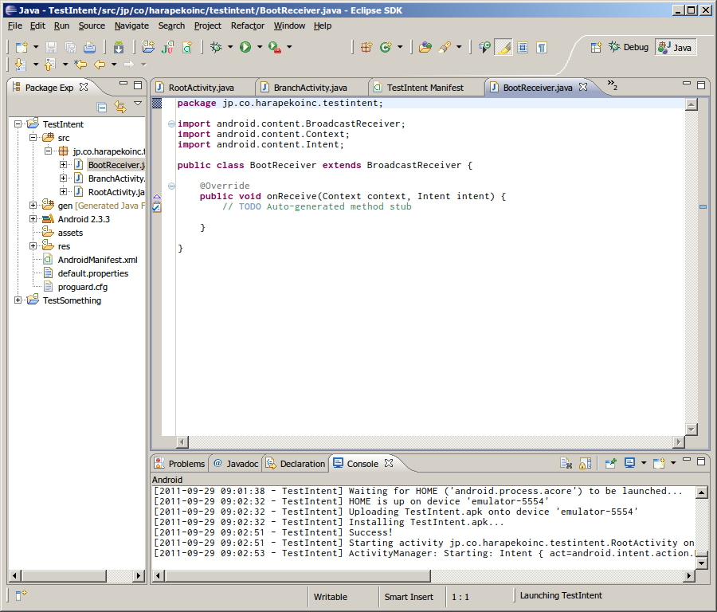

シリーズとして、下記の書籍にて学習したことについてのメモを綴っています。

今回は、「HACK#8 インテント入門」 (p.63～71) の内容について触れていきます。
インテントってなんぞや?
インテントとはアクティビティやアプリケーション間でのやり取りを行うための仕組みです。インテントを利用することで自アプリケーション内の画面遷移だけでなく、他アプリケーションと連携を取ることができます。
前回までの学習においても、画面遷移の際に (つまり、他のアクティビティを呼び出す際に)、インテントを利用していました。 startActivity() メソッドに渡していたアレですね。
button_to_branch.setOnClickListener(new View.OnClickListener() {
public void onClick(View v) {
startActivity(
new Intent(RootActivity.this, BranchActivity.class) // <- これ。
);
}
});
「HACK#6 アクティビティ入門」においてこのようなコードが紹介された際には、この Intent クラスについては特に説明はありませんでした。
本書で「明示的 INTENT」と呼んでいる方法では、 setClassName() メソッドを用いて、呼び出そうとするアクティビティのパッケージ名とクラス名を指定しますが、同名のメソッドにはパッケージ名の代わりに Context オブジェクトを引数に取るものがオーバーロードされており (Activity クラスはこの Context クラスを継承している)、上記のコンストラクタはまさにこの「明示的 INTENT」を実現する 1つの方法と言えるものなのでしょう。
実際、setClassName() メソッドは this を返すので、上記のコードは以下のように書いても同様に動作することが確認できます。
public void onClick(View v) {
startActivity((new Intent()).setClassName(RootActivity.this,
"jp.co.harapeko.testsome.BranchActivity")); // <- クラス名は省略できないっぽい…。
}
次に「暗黙的 INTENT」ですが、
21: Intent intent=new Intent(); 22: intent.setAction(Intent.ACTION_VIEW); 23: intent.setData(uri) 24: startActivity(intent);
Intent クラスにはアクションと URI を指定するコンストラクタもあるので、この部分は以下のように書くこともできます。
Intent intent=new Intent(Intent.ACTION_VIEW, uri);
startActivity(intent);
インテントフィルタ
今度はインテントフィルタを用いて、暗黙的 INTENT を利用して起動するアクティビティを作る方法が解説されています。
前回までの学習において、マニフェスト XML に、書くなと言われたり書けと言われたりしていた <intent-filter> 要素がここにきて登場します。
<intent-filter>
<action android:name="android.intent.action.VIEW" />
<category android:name="android.intent.category.DEFAULT" />
<category android:name="android.intent.category.BROWSABLE" />
<data android:scheme="http" />
</intent-filter>
DEFAULT カテゴリは要らんのかなと思ったのですが、消した状態でやってみたら暗黙的 INTENT で呼び出されなくなっちゃいました。ドキュメントを見てもよくわからなかったのですが (^_^;、これがないとデフォルトでは暗黙的 INTENT における起動の対象にはならない、ということなのでしょうか。
対応するスキーマを増やしたい場合は、 <data> 要素を単に増やせばよいようです。
<data android:scheme="http" />
<data android:scheme="https" />
<data android:scheme="ftp" />
<data android:scheme="ftps" />
なお、起動される側のアクティビティにおける実装ですが、
6: if(!getIntent().getAction().equals(Intent.ACTION_MAIN)){
7: //暗黙的に起動された場合
ここは以下のように書いた方が良さそうです。
if (Intent.ACTION_VIEW.equals(getIntent().getAction())) {
// 暗黙的に起動された場合
if ブロック内の処理内容が VIEW アクションの時にのみ行われるべきものであるから、というのもあるのですが、なによりこのアクティビティが明示的 INTENT から起動した場合、 getIntent().getAction() が null を返すために、サンプルコードのままだと java.lang.NullPointerException 例外が送出されてしまうからです。
シェルの am コマンドでインテントをテスト
まとめると、
…明示的 INTENTam start -n(パッケージ名)/(クラス名)
…暗黙的 INTENTam start -a(アクション名)-d(URI) [-t(MIME タイプ)]
…BroadcastIntentam broadcast -a(アクション名)
といった感じです。
BroadcastIntent
アクティビティ以外のクラスを作るのは何気に初めてなんじゃないでしょうか。 Eclipse にもまだあんまり慣れていないので、ここらで新規にクラスを追加する方法をおさらいしてみます。
-
Package Explorer にて、プロジェクトツリーの「src/(パッケージ名)」を右クリックし、コンテキストメニューから「New > Class」を選択する。
- プロジェクト名を右クリックして、でも良いのですが、パッケージ名を右クリックしていた場合、次の「New Java Class」ダイアログでパッケージ名を入力する手間が省けます。
-
「New Java Class」ダイアログにて、「Name」にクラス名、「Superclass」に継承する基底クラスの完全名称を入力する。
- 今回の場合、基底クラスの名称は「
android.content.BroadcastReceiver」ですね。 - 基底クラスの完全名称がわからない場合はその横にある「Browse…」ボタンをクリックして表示される検索ダイアログを利用すると便利ですよ。
- 今回の場合、基底クラスの名称は「
-
クラスのソースファイルが作成されます。オーバーライドが必要なメソッドが始めから用意され、必要な
import文もすべてあらかじめ書かれた状態で作られるので、便利です。
Eclipse でクラスの新規追加 - 追加されたソースファイル
{kind=link}
{kind=link}
{kind=link}
FLAG_ACTIVITY_NEW_TASK フラグ
基本的には今までと同じように
intentを生成しますが、アクティビティ以外からアクティビティを起動する場合には 5 行目のように :intent.addFlags(Intent.FLAG_ACTIVITY_NEW_TASK);を記述する必要があります。
ここ、さらっと書かれていますが、何気に重要なんじゃないでしょうか。要チェックです。実際、この行無しでビルドして、 BroadcastIntent を発行してみると、以下のログメッセージを伴うような例外が送出されます。
09-29 01:15:28.376: ERROR/AndroidRuntime(694): java.lang.RuntimeException: Unable to start receiver jp.co.harapekoinc.testintent.BootReceiver: android.util.AndroidRuntimeException: Calling startActivity() from outside of an Activity context requires the FLAG_ACTIVITY_NEW_TASK flag. Is this really what you want?
リファレンスにおける android.content.Context クラスの startActivity() メソッドの項にも以下のような記述があります。
Note that if this method is being called from outside of an
ActivityContext, then the Intent must include theFLAG_ACTIVITY_NEW_TASKlaunch flag. This is because, without being started from an existing Activity, there is no existing task in which to place the new activity and thus it needs to be placed in its own separate task.
Intent.FLAG_ACTIVITY_NEW_TASK フラグの説明も見ておきましょう。 Back Stack というのがあって、このフラグを指定すると Back Stack に新しいタスクを積むよ、というようなことが書いてあります。 Back Stack についてのドキュメントも目を通しておくと良さそうです。
実際のシチュエーション
BOOT_COMPLETED アクションはその名の通り、システム起動時に bloadcast されるアクションです。せっかくなので、システムを再起動して、ここで作ったアプリが自動的に起動するか試してみるといいと思います。エミュレータでやる場合、単にエミュレータを終了して起動し直してもシステムを再起動したことにはなりません。エミュレータの電源ボタンを長押しして、システムのシャットダウンを実行し、シャットダウン中の画面になるのを待ってから終了 (ここで待ち続けても多分終了しません…) し、再開する必要があります。
まとめ
そんなわけで今回は Android 公式のリファレンスも合わせて参照しながら進めてみました。学習の中で疑問点を見つけて公式情報に当たるというのはとても大切なことだと思います。
暗黙的 INTENT や BloadcastIntent については若干気になる仕様だなと思いました。開発者サイドとしてはプログラムの実装の中で完全にコントロールできるのでやりやすいっちゃやりやすいのですが、ユーザーに自分で設定できる余地が与えられていないのが気になります。特に BloadcastIntent に関しては、それによって実行される処理がユーザーにとって鬱陶しいと思われるようなものでは恐らく敬遠されるでしょうから、慎重に実装する必要があるでしょうね。
2011 年 9 月 29 日 by 村山 俊之